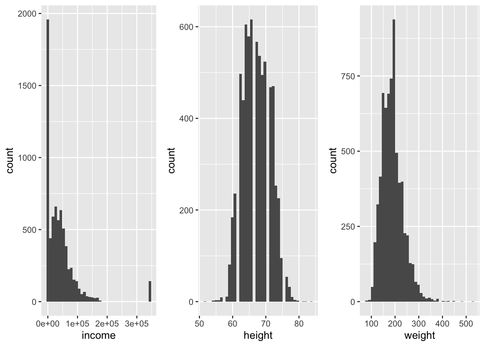

packs <- suppressPackageStartupMessages(
c(
library(tidyverse),
library(nycflights13),
library(gridExtra),
library(modelr),
library(grid),
library(ggplotify),
library(vtable)
)
)Exploratory Data Analysis (EDA)
Packages used
unique(packs) [1] "forcats" "stringr" "dplyr" "purrr" "readr"
[6] "tidyr" "tibble" "ggplot2" "tidyverse" "stats"
[11] "graphics" "grDevices" "utils" "datasets" "methods"
[16] "base" "nycflights13" "gridExtra" "modelr" "grid"
[21] "ggplotify" "vtable" "kableExtra" Generate References for Packages used
- References for used packages will be found at the end of document.
# create a bib file for the R packages
# used in this document
# Note! Needs to do a touch(eda.bib) in terminal before first run
# else stops when bibliography: "eda.bib" not found in YAML
knitr::write_bib(
packs,
file = "eda.bib"
)
rm(packs)Chapter 6; Workflow
- Not all to relevant for us since we use Quarto Documents,
- but some important points
- Cmd + Return/Ctrl + Enter runs current statement and jumps to next statement
- Selecting some statements and hitting Cmd + Return/Ctrl + Enter will run the selected statements.
- Nice for debugging pipes
- Be very careful when you select the statements
- Missing a ‘)’ or a ‘“’ can bring a lot of hurt.
- If sh*t happens, ESC is your best friend
Exploratory Data Analysis (r4ds chap. 7)
General reflection up on the concept of Exploratory Data Analysis. You will find details and more code in chapter 7 of r4ds.
- Getting to know your data
- Variation in variables
- Variation between variables
Some definitions
- Variable: some quality of the underlying phenomenon that one can measure
- Value: the recorded number or category resulting from the measurement
- Observation: a set of measurements of the underlying phenomenon
- same time
- same object
- Tabular data Listing of variables, observations and values
- Tidy tabular data: Tabular data where
- each variable is in a column,
- each observation in a row and
- each cell in the table contains one value
Single variable, load data
- Load the data
my_heights <- modelr::heightsAny NAs?
# NAs in my_heights?
my_heights %>%
apply(MARGIN = 2, FUN = is.na) %>%
apply(MARGIN = 2, FUN = sum) income height weight age marital sex education afqt
0 0 95 0 0 0 10 262 Descriptive Statistics
Describe data by tables showing:
- Different statistics (characteristics) of the data
Number of obs.
Number of missing values
Minimum value
Maximum value
Mean
Dispersion
Standard deviation
Variance
Percentiles
Descriptive Statistics ex. my_heights
- Splits variables into two tables
# package vtable must be installed
my_heights %>%
select(-marital, -sex) %>%
# . to stop RStudio complaining about no data
vtable::st(.)| Variable | N | Mean | Std. Dev. | Min | Pctl. 25 | Pctl. 75 | Max |
|---|---|---|---|---|---|---|---|
| income | 7006 | 41203.938 | 55892.117 | 0 | 165.5 | 55000 | 343830 |
| height | 7006 | 67.104 | 4.082 | 52 | 64 | 70 | 84 |
| weight | 6911 | 188.304 | 44.473 | 76 | 157 | 212 | 524 |
| age | 7006 | 51.325 | 2.235 | 47 | 49 | 53 | 56 |
| education | 6996 | 13.218 | 2.6 | 1 | 12 | 15 | 20 |
| afqt | 6744 | 41.211 | 29.031 | 0 | 15.115 | 65.235 | 100 |
Descriptive Statistics ex. my_heights
# package vtable must be installed
my_heights %>%
select(marital, sex) %>%
vtable::st(.)Descriptive Statistics ex. my_heights
| Variable | N | Percent |
|---|---|---|
| marital | 7006 | |
| ... single | 1124 | 16% |
| ... married | 3806 | 54.3% |
| ... separated | 366 | 5.2% |
| ... divorced | 1549 | 22.1% |
| ... widowed | 161 | 2.3% |
| sex | 7006 | |
| ... male | 3402 | 48.6% |
| ... female | 3604 | 51.4% |
Descriptive Statistics ex. my_heights
my_heights %>%
select(-marital) %>%
vtable::st(group = 'sex')| Variable | N | Mean | SD | N | Mean | SD |
|---|---|---|---|---|---|---|
| income | 3402 | 53510.056 | 69399.058 | 3604 | 29587.564 | 35346.899 |
| height | 3402 | 70.106 | 2.993 | 3604 | 64.271 | 2.723 |
| weight | 3392 | 204.134 | 40.727 | 3519 | 173.046 | 42.562 |
| age | 3402 | 51.275 | 2.224 | 3604 | 51.373 | 2.245 |
| education | 3396 | 13.053 | 2.565 | 3600 | 13.374 | 2.623 |
| afqt | 3248 | 41.876 | 29.78 | 3496 | 40.594 | 28.309 |
Descriptive Statistics ex. my_heights
# package vtable must be installed
my_heights %>%
mutate(married = if_else(marital == 'married', TRUE, FALSE)) %>%
filter(sex == 'female') %>%
select(-sex, -marital) %>%
vtable::st(group = 'married')| Variable | N | Mean | SD | N | Mean | SD |
|---|---|---|---|---|---|---|
| income | 1703 | 26682.337 | 30962.112 | 1901 | 32190.195 | 38680.357 |
| height | 1703 | 64.197 | 2.785 | 1901 | 64.338 | 2.665 |
| weight | 1662 | 177.223 | 45.254 | 1857 | 169.307 | 39.64 |
| age | 1703 | 51.36 | 2.267 | 1901 | 51.384 | 2.225 |
| education | 1701 | 13.018 | 2.559 | 1899 | 13.694 | 2.638 |
| afqt | 1647 | 33.119 | 26.169 | 1849 | 47.251 | 28.486 |
Descriptive Statistics ex. my_heights
# package vtable must be installed
my_heights %>%
mutate(married = if_else(marital == 'married', TRUE, FALSE)) %>%
filter(sex == 'male') %>%
select(-sex, -marital) %>%
vtable::st(group = 'married')| Variable | N | Mean | SD | N | Mean | SD |
|---|---|---|---|---|---|---|
| income | 1497 | 32122.171 | 50519.952 | 1905 | 70317.228 | 77170.587 |
| height | 1497 | 69.835 | 3.082 | 1905 | 70.318 | 2.904 |
| weight | 1492 | 200.097 | 41.932 | 1900 | 207.304 | 39.478 |
| age | 1497 | 51.164 | 2.161 | 1905 | 51.362 | 2.269 |
| education | 1494 | 12.434 | 2.244 | 1902 | 13.539 | 2.695 |
| afqt | 1426 | 34.076 | 27.893 | 1822 | 47.981 | 29.792 |
Single variable graphical description, bar chart
- Simplest, bar-chart
ggplot(data = my_heights) +
geom_bar(mapping = aes(x = education), na.rm = TRUE)Single variable graphical description, bar chart

The peaks?
- What is the reason behind the peak at 12 years?
- High-school
- What is the reason behind the peak at 14 years?
- 2 year trade college
- What is the reason behind the peak at 16 years?
- 4 year college
Single variable, i.e. variation in a variable
- Example: How does income vary in the
modelr::heightsdataset?- Does someone have zero income?
- How to display the variable? > - histogram;
hist(my_df$var_name, breaks = 20)orgeom_histogram()from ggplot > - density/violin plot
- Be aware of outliers?
- Might be difficult to spot in a histogram
hist() and geom_histogram()
hist1 <- ggplotify::as.ggplot(~hist(my_heights$income, breaks = 20))
hist2 <- ggplot(my_heights, mapping = aes(x = income)) +
geom_histogram(bins = 20)
gridExtra::grid.arrange(hist1, hist2, ncol = 2)
geom_histogram() other variables
hist3 <- ggplot(my_heights, mapping = aes(x = income)) +
geom_histogram(bins = 40, na.rm = TRUE)
hist4 <- ggplot(my_heights, mapping = aes(x = height)) +
geom_histogram(bins = 40, na.rm = TRUE)
hist5 <- ggplot(my_heights, mapping = aes(x = weight)) +
geom_histogram(bins = 40, na.rm = TRUE)
gridExtra::grid.arrange(hist3, hist4, hist5, nrow = 1)geom_histogram() other variables

geom_histogram() other variables
hist6 <- ggplot(my_heights, mapping = aes(x = age)) +
geom_histogram(bins = 40, na.rm = TRUE)
hist7 <- ggplot(my_heights, mapping = aes(x = education)) +
geom_histogram(bins = 40, na.rm = TRUE)
hist8 <- ggplot(my_heights, mapping = aes(x = afqt)) +
geom_histogram(bins = 40, na.rm = TRUE)
gridExtra::grid.arrange(hist6, hist7, hist8, nrow = 1)geom_histogram() other variables

Variation in a variable, given another variable
- We can use the facet feature of
ggplot
geom_density(); faceted on sex
- Distribution of income
- Three levels of education ([0-12) “NotHS”, [12-14) “NotTC”, [14-16) “NotC”, [16-21] “C+”)
- Faceted on the
sexvariable - Use the
cutfunction to make the categories - Have to use
right = FALSEto get open interval on the right
geom_density(); faceted on sex
my_heights %>%
mutate(
edu_fac = cut(education,
breaks = c(0, 12, 14, 16, 21),
labels = c("NotHS", "NotTC", "NotC", "C+"),
right = FALSE)
) %>%
filter(!is.na(edu_fac) & income > 0) %>%
ggplot(mapping = aes(x = income, fill = edu_fac, colour = edu_fac)) +
geom_density(alpha = 0.2, na.rm = TRUE) +
facet_wrap(~sex)geom_density(); faceted on sex

geom_density(); facet edu_fac
- Perhaps better to facet on education
my_heights %>%
mutate(
edu_fac = cut(education,
breaks = c(0, 12, 14, 16, 21),
labels = c("NotHS", "NotTC", "NotC", "C+"),
right = FALSE)
) %>%
filter(!is.na(edu_fac) & income > 0) %>%
ggplot(mapping = aes(x = income, fill = sex, colour = sex)) +
geom_density(alpha = 0.2, na.rm = TRUE) +
facet_wrap(~edu_fac)geom_density(); facet edu_fac

Income equal to 0?
my_heights %>%
dim()[1] 7006 8my_heights %>%
filter(income < 1) %>%
dim()[1] 1740 8Income equal to 0?
my_heights %>%
filter(income < 1) %>%
select(sex) %>%
group_by(sex) %>%
table()sex
male female
745 995 Income equal to 0?
- No income, grouped by sex and edu_fac
my_heights %>%
mutate(
edu_fac = cut(education,
breaks = c(0, 12, 14, 16, 21),
labels = c("NotHS", "NotTC", "NotC", "C+"),
right = FALSE)
) %>%
filter(income < 1) %>%
select(sex, edu_fac) %>%
group_by(sex) %>%
table() edu_fac
sex NotHS NotTC NotC C+
male 252 359 74 56
female 245 476 137 133Boxplot
my_heights %>%
mutate(
edu_fac = cut(education,
breaks = c(0, 12, 14, 16, 21),
labels = c("NotHS", "NotTC", "NotC", "C+"),
right = FALSE)
) %>%
filter(income > 0) %>%
ggplot(mapping = aes(x = edu_fac, y = income)) +
facet_wrap(~sex) +
geom_boxplot()Boxplot

Boxplot code, turned 90
my_heights %>%
mutate(
edu_fac = cut(education,
breaks = c(0, 12, 14, 16, 21),
labels = c("NotHS", "NotTC", "NotC", "C+"),
right = FALSE)
) %>%
filter(income > 0) %>%
ggplot(mapping = aes(x = edu_fac, y = income)) +
facet_wrap(~sex) +
geom_boxplot() +
coord_flip()Boxplot plot, turned 90

How to treat bad data
- Outliers?
- Real outliers or faulty registration?
- What to do?
To just delete the observation is seldom the right solution
Document what you do!
If you suspect faulty data entry/registration change value to NA
How to treat bad data cont.
- What to do? cont.
In some rare cases it might be acceptable to edit the data
if you have very few observations
can give a very plausible explanation for the faulty entry. Document very carefully.
Ex. percentage unemployed timeseries: 2,3%, 3,7% … 270% … 4,1%.
- If you can argue that 2,7 probably has been entered instead of 0,027 it might be defensible to edit the observation, but normally you should change it to NA and document your edit.
Do not use
na.rm = TRUEinggplotbefore last edit.Make sure that you have thoroughly documented the missing values.
ggplotis nice and warns you about missing values and tells you how many there are.
How to treat bad data cont.
- With real outliers
- Explanation. Is there a missing variable?
- Do the analysis with and without the outliers. If similar results not to much of a problem, if not …
Quiz
From r4ds. Use help (?)
- How are NAs handled in
geom_histogram()?- How are NAs handled in
geom_bar()?- How are NAs handled in
sumandmean
Answer Quiz
set.seed(999)
my_data <- tibble(val = c(round(runif(97, 1, 10), 0), rep(NA, 3)))
g <- ggplot(my_data, mapping = aes(x = val))
g1 <- g + geom_histogram()
g2 <- g + geom_bar()
gridExtra::grid.arrange(g1, g2, ncol = 2)
sum(my_data$val); mean(my_data$val)
sum(my_data$val, na.rm = TRUE); mean(my_data$val, na.rm = TRUE)Answer Quiz
`stat_bin()` using `bins = 30`. Pick better value with `binwidth`.Warning: Removed 3 rows containing non-finite values (stat_bin).Warning: Removed 3 rows containing non-finite values (stat_count).
Answer Quiz

sum(my_data$val); mean(my_data$val)[1] NA[1] NAsum(my_data$val, na.rm = TRUE); mean(my_data$val, na.rm = TRUE)[1] 519[1] 5.350515Answer Quiz
- Using
na.rm = TRUE.
set.seed(999)
my_data <- tibble(val = c(round(runif(97, 1, 10), 0), rep(NA, 3)))
g <- ggplot(my_data, mapping = aes(x = val))
g1 <- g + geom_histogram(binwidth = 1, na.rm = TRUE)
g2 <- g + geom_bar(na.rm = TRUE)
gridExtra::grid.arrange(g1, g2, ncol = 2)
sum(my_data$val); mean(my_data$val)
sum(my_data$val, na.rm = TRUE); mean(my_data$val, na.rm = TRUE)Answer Quiz

sum(my_data$val); mean(my_data$val)[1] NA[1] NAsum(my_data$val, na.rm = TRUE); mean(my_data$val, na.rm = TRUE)[1] 519[1] 5.350515Answer Quiz
- Now the two seems handle NAs the same way.
- Normal rule: One NA => result NA
- For
sum()andmean()na.rm = TRUEreturns the result of the calculation when NAs are removed
Covariation
- Use facets as above
- Some cases
- Categorical and continuous variable
- Two categorial variables
- Two continuous variables
Categorical and continuous variable
geom_freqpoly()- Lines, category by colour or linetype (BW)
- Default gives count, density often better
Categorical and continuous variable; code
my_heights %>%
mutate(
edu_fac = cut(education,
breaks = c(0, 12, 14, 16, 21),
labels = c("NotHS", "NotTC", "NotC", "C+"),
right = FALSE)
) %>%
filter(income > 0 & !is.na(weight) & !is.na(afqt) & !is.na(edu_fac)) %>%
ggplot(mapping = aes(x = income, y = ..density..)) +
geom_freqpoly(mapping = aes(colour = edu_fac), binwidth = 10000)- Try also
binwidth = 3000
Categorical and continuous variable; plot

Two categorical variable; code
my_heights %>%
mutate(
edu_fac = cut(education,
breaks = c(0, 12, 14, 16, 21),
labels = c("NotHS", "NotTC", "NotC", "C+"),
right = FALSE)
) %>%
filter(income > 0 & !is.na(weight) & !is.na(afqt) & !is.na(edu_fac)) %>%
ggplot() +
geom_count(mapping = aes(x = marital, y = edu_fac))Two categorical variable; plot

One continuouse variable, one with many categories
my_heights %>%
filter(income > 0 & !is.na(weight) & !is.na(afqt) & !is.na(education)) %>%
ggplot() +
geom_point(mapping = aes(x = education, y = income), alpha = 0.05)One continuouse variable, one with many categories

Two continuous variables
- Use
diamondsdataset - Smaller point size
diamonds %>%
ggplot(mapping = aes(x = carat, y = price)) +
geom_point(size = 0.1)Two continuous variables

Two continuous variables; alpha
diamonds %>%
ggplot(mapping = aes(x = carat, y = price)) +
geom_point(alpha = 0.1, size = 0.2)Two continuous variables; alpha

Two continuous variables; make one categorical
diamonds %>%
filter(carat <= 2) %>%
ggplot(mapping = aes(x = carat, y = price)) +
geom_boxplot(mapping = aes(group = cut_width(carat, 0.1)))Two continuous variables; make one categorical
- Not like the one in r4ds

References
Auguie, Baptiste. 2017. gridExtra: Miscellaneous Functions for "Grid" Graphics. https://CRAN.R-project.org/package=gridExtra.
Henry, Lionel, and Hadley Wickham. 2020. Purrr: Functional Programming Tools. https://CRAN.R-project.org/package=purrr.
Huntington-Klein, Nick. 2022. Vtable: Variable Table for Variable Documentation. https://nickch-k.github.io/vtable/.
Müller, Kirill, and Hadley Wickham. 2022. Tibble: Simple Data Frames. https://CRAN.R-project.org/package=tibble.
R Core Team. 2022. R: A Language and Environment for Statistical Computing. Vienna, Austria: R Foundation for Statistical Computing. https://www.R-project.org/.
Wickham, Hadley. 2016. Ggplot2: Elegant Graphics for Data Analysis. Springer-Verlag New York. https://ggplot2.tidyverse.org.
———. 2019. Stringr: Simple, Consistent Wrappers for Common String Operations. https://CRAN.R-project.org/package=stringr.
———. 2020. Modelr: Modelling Functions That Work with the Pipe. https://CRAN.R-project.org/package=modelr.
———. 2021a. Forcats: Tools for Working with Categorical Variables (Factors). https://CRAN.R-project.org/package=forcats.
———. 2021b. Nycflights13: Flights That Departed NYC in 2013. https://github.com/hadley/nycflights13.
———. 2021c. Tidyverse: Easily Install and Load the Tidyverse. https://CRAN.R-project.org/package=tidyverse.
Wickham, Hadley, Mara Averick, Jennifer Bryan, Winston Chang, Lucy D’Agostino McGowan, Romain François, Garrett Grolemund, et al. 2019. “Welcome to the tidyverse.” Journal of Open Source Software 4 (43): 1686. https://doi.org/10.21105/joss.01686.
Wickham, Hadley, Winston Chang, Lionel Henry, Thomas Lin Pedersen, Kohske Takahashi, Claus Wilke, Kara Woo, Hiroaki Yutani, and Dewey Dunnington. 2022. Ggplot2: Create Elegant Data Visualisations Using the Grammar of Graphics. https://CRAN.R-project.org/package=ggplot2.
Wickham, Hadley, Romain François, Lionel Henry, and Kirill Müller. 2022. Dplyr: A Grammar of Data Manipulation. https://CRAN.R-project.org/package=dplyr.
Wickham, Hadley, and Maximilian Girlich. 2022. Tidyr: Tidy Messy Data. https://CRAN.R-project.org/package=tidyr.
Wickham, Hadley, Jim Hester, and Jennifer Bryan. 2022. Readr: Read Rectangular Text Data. https://CRAN.R-project.org/package=readr.
Yu, Guangchuang. 2021. Ggplotify: Convert Plot to Grob or Ggplot Object. https://github.com/GuangchuangYu/ggplotify.
Zhu, Hao. 2021. kableExtra: Construct Complex Table with Kable and Pipe Syntax. https://CRAN.R-project.org/package=kableExtra.